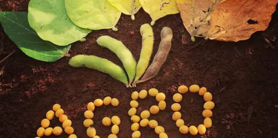
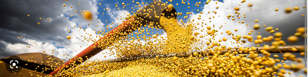

INFOAGRO
☞O Levantamento Sistemático da Produção Agrícola (LSPA) de julho, do Instituto Brasileiro de Geografia e Estatística (IBGE), confirmou a quebra de safra de soja em 2022, mas fez um pequeno ajuste em relação a estimativa de junho. No LSPA do mês passado, o IBGE projeta safra de 118,8 milhões de toneladas de soja, tombo de 12,0% ante 2021 e alta de 0,7% em relação ao projetado em junho.
☞A área colhida foi estimada em 40,8 milhões de hectares, aumento de 4,6% frente a 2021, e de 0,2% em relação ao mês anterior, informou o IBGE. Com isso, haverá queda de15,9% no rendimento médio ante 2021. "A participação da soja no volume total de cereais, leguminosas e oleaginosas produzidos no Paí.
☞A obrigação de apresentar o documento vale para pessoa física ou jurídica proprietária, titular do domínio útil ou possuidora de qualquer título, inclusive a usufrutuária. No caso de condôminos, a declaração deve ser apresentada por um de seus integrantes quando o imóvel rural pertencer simultaneamente a mais de um contribuinte, em decorrência de contrato, decisão judicial ou em função de doação recebida em comum. Quando o imóvel rural pertencer a mais de uma pessoa, a DITR deverá ser apresentada por um dos proprietários. Também devem apresentar a declaração pessoas física ou jurídica que, entre 1º de janeiro de 2022 e a data da apresentação da DITR, tenham perdido a posse do imposto
☞Os preços dos feijões brasileiros parecem ter encontrado um ponto de estabilidade e a demanda voltou a aquecer, informa o Ibrafe (Instituto Brasileiro de Feijão e Pulses). De acordo com boletim da entidade, o Feijão-preto segue estável no Sul do Brasil, com referências que vão de acordo com a qualidade, oscilando entre uma faixa de R$ 180 até R$ 210.
APRESENTAÇÃO:ALEX KAUÃ,BRUNO GABRIEL🗿🍷